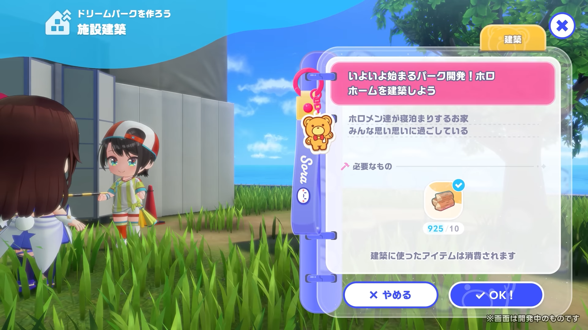
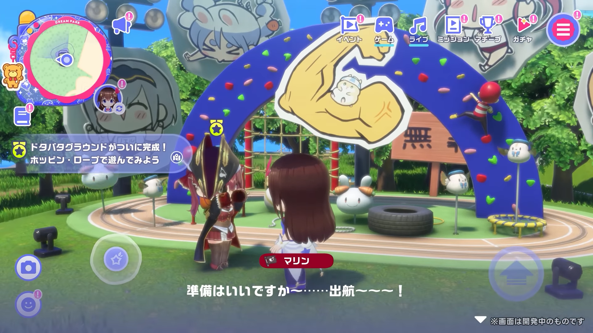
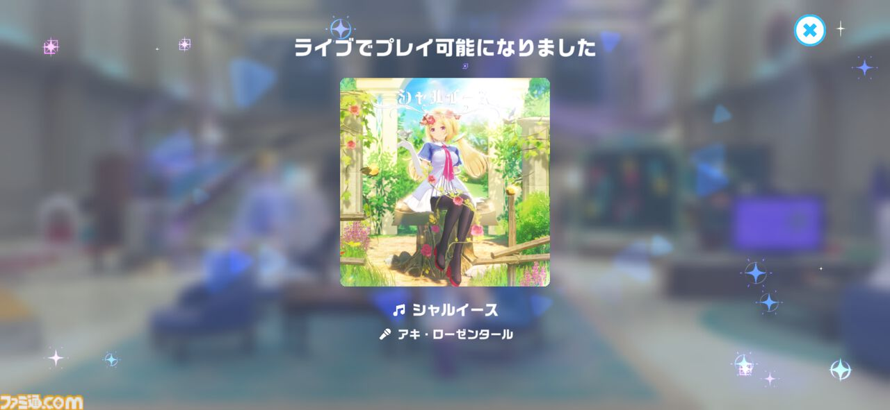
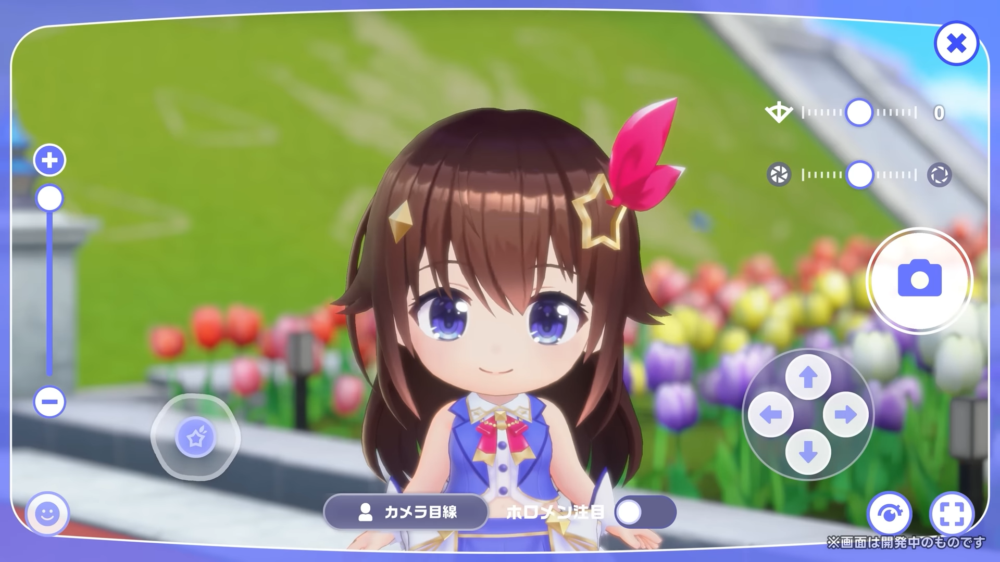
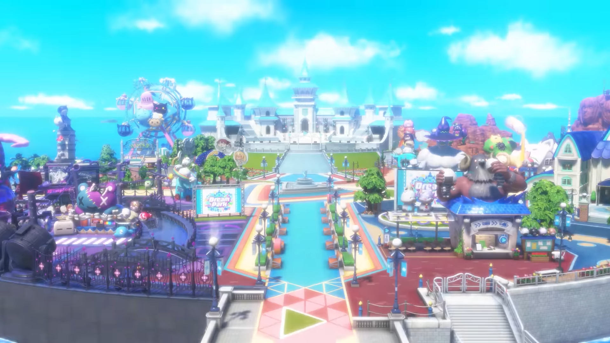
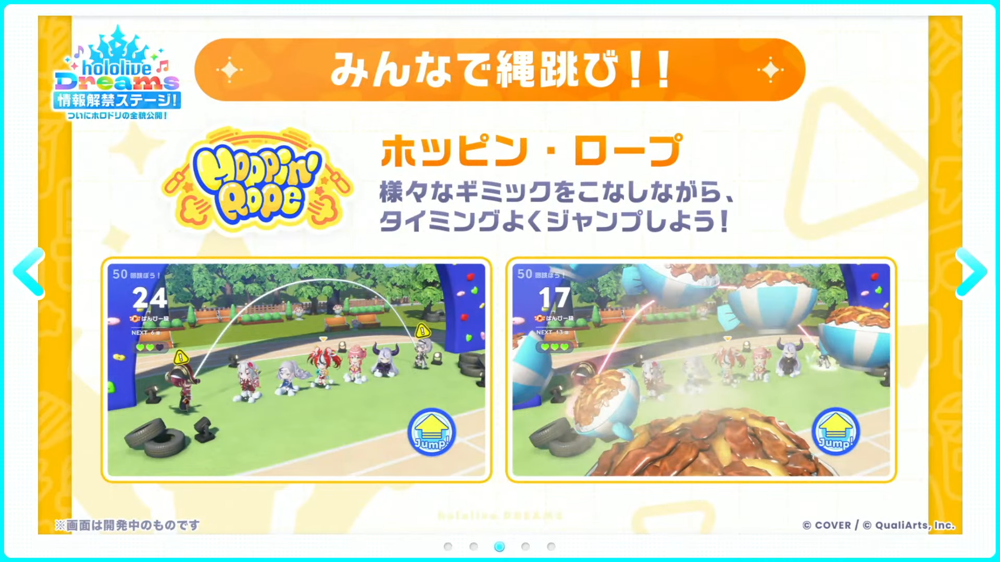
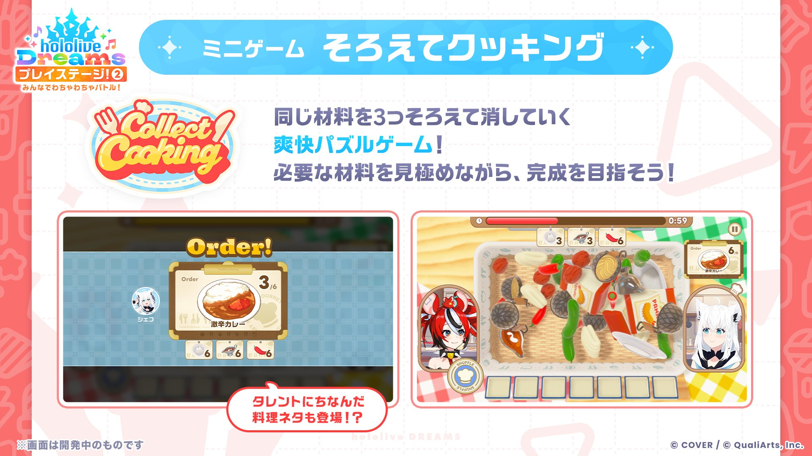
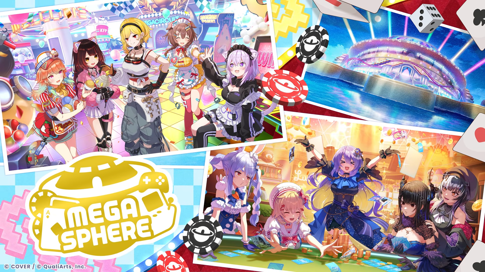
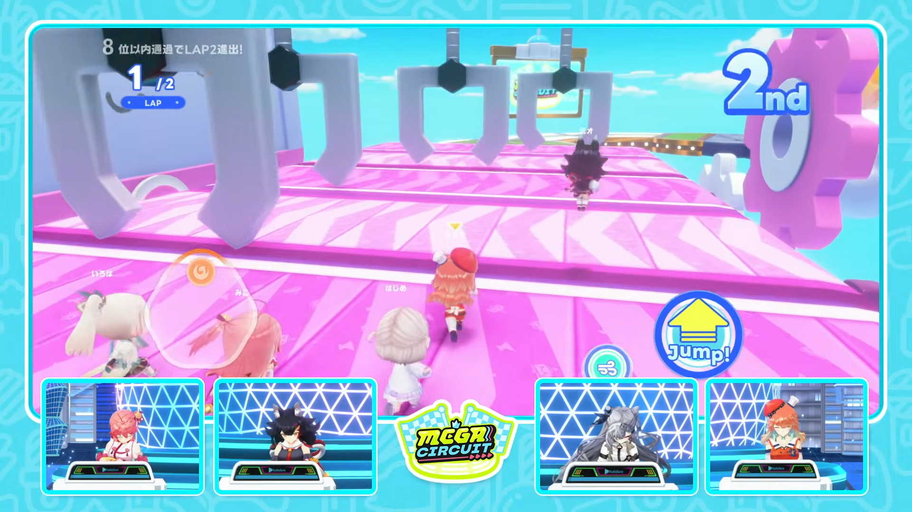

ドリームパーク
ホロドリは、テーマパークを舞台にしたリズム＆RPGです。
ホロメンクエストをクリアすると、いろいろなホロメンを操作して遊べるようになります。
ドリームパークの遊び方
ホロメンクエスト

ホロメンクエストは毎日ランダムで2人分登場します。
クリアすると、操作できるホロメンやソロ楽曲の解放につながります。
ホロメン招待状を使うと、対象のホロメンを指定して招待できる場合があります。
解放されるミニゲーム

クエストやストーリーを進めると、施設・楽曲・ミニゲームが少しずつ解放されます。
ミニゲームでは建築素材・育成素材・オートチケットなどを獲得できます。
スコアアタックやマルチプレイ対応の遊びもあります。
楽曲解禁

クエストやストーリーを進めると、遊べる楽曲が少しずつ解禁されます。
ドリームパークを進めながら、新しい楽曲を増やしていきましょう。
フォトモード

フォトモードでは、ズームや絞りなどを調整してホロメンを撮影できます。
ドリームパークでは、Live2D演出やデフォルメホロメン同士の掛け合いも楽しめます。
ハーモニーガーデン

ライブやミニゲームで資材を集めると、ショップやミニゲームなどの新しい機能を解放できます。
ホロメンと一緒に、夢のテーマパークを少しずつ広げていくエリアです。
ホッピン・ロープ

大縄跳びで回数や時間に挑戦するミニゲームです。
プレイ中は、縄のスピードが上がったり、画面を遮る障害物が出たりするなど、ホロメンごとの妨害演出が発生します。
タイミングを見ながらジャンプを続け、ハイスコアを目指します。
そろえてクッキング

同じ材料を3つそろえて消していく、爽快パズルゲームです。
タレントにちなんだ料理ネタも登場します。
必要な材料を見極めながら、料理の完成を目指します。
そろえてクッキングの遊び方
概要
| 遊べる場所 | ハーモニーガーデンに建造される施設から遊べます。 |
|---|---|
| 目的 | カゴに入った大量の食材から、作りたい料理に必要な食材を素早く取り出して完成させます。 |
| クリア条件 | 10分以内に指定品目をすべて完成できたらクリアです。 |
ルール
- 食材はカゴの中から選びます。必要な材料を見極めて取り出しましょう。
- 取り出した食材を手に持てる数は7つまでです。
- 同じ食材を3個取り出すと、料理に不要な食材でも手持ちから除去されます。
- 食材を持ちきれなくなるとゲームオーバーです。
- カゴを揺らすと、食材の位置を動かせます。
登場する料理
| 激辛カレー | シェフ: 白上フブキ 食材: ライス、カレー、唐辛子 辛いもの好き狐も大裁判の超絶HOTなカレーライス。フブキはもっと辛くしたいらしいが、周りに止められている。 |
|---|---|
| ツナマヨクレープ | シェフ: アキ・ローゼンタール 食材: 卵、小麦粉、ツナ缶 アキロゼ考案の絶品クレープ。生地の甘みとツナマヨの塩加減の相性は抜群で、やみつきになるホロメンが続出中。 |
| えびふらいおん天丼 | シェフ: 夏色まつり 食材: えびふらいおん、大盛りライス、ソース えびふらいおんを模したまつり渾身の天丼。ぷりぷりエビとリッチなボリュームに、お腹も心も満たされる。 |
| ちょこっとハンバーグ | シェフ: 癒月ちょこ 食材: ひき肉、玉ねぎ、パン粉 肉汁と愛情が口いっぱいに広がるハンバーグ。考案したちょこ本人も「天才じゃない？」と自画自賛するおいしさ。 |
| ししろん系ラーメン | シェフ: 獅白ぼたん 食材: 麺、もやし、SSR海苔 津々浦々、数多のラーメンを食べたぼたんが放つ究極の一杯。スープに至るまでこだわりつくされている。 |
| ルイ姉特製ポテトサラダ | シェフ: 鷹嶺ルイ 食材: じゃがいも、きゅうり、ハム ルイがよく作っているというポテトサラダ。心を奪われたホロメンは数知れず、一度食べればリピート間違いなし。 |
| シリアル牛乳 | シェフ: パヴォリア・レイネ 食材: シリアル、牛乳、手形の皿 手形のお皿に乗ったレイネ渾身のシリアル牛乳。シリアルと牛乳がこれ以上ないほど完璧な比率で混ざり合っている。 |
| 温玉うどん | シェフ: オーロ・クロニー 食材: うどん、温泉卵、長ネギ クロニーの愛する温玉うどん。コシのある麺に濃厚な温泉卵を絡め、すすれば思わずGOODなひと時が訪れる。 |
| 限界飯 | シェフ: 一条莉々華 食材: ソーセージ、梅干し、レトルトライス ご飯、ソーセージ、梅干しのコラボはシンプルイズベスト。こーゆーのがええんやと言いたくなる莉々華推薦の一品。 |
メガスフィア

ゲーム＆カジノエリアで構成されたエリア
コインを増やしながらストーリーを進めて
エリアを完成させよう！
メガサーキット

タレントにちなんだ10種類のステージから、
ランダムで選ばれた３つのステージで勝負！
道中の障害物をよけて1位を目指そう！
ポカジャン！

期生などの組み合わせで役を揃えてコインを奪い合おう！
ポカジャンの遊び方
基本
| 遊べる場所 | メガスフィアの施設から遊べる4人用カードゲームです。 |
|---|---|
| 目的 | カードを入れ替えながら役を作り、コインを奪い合います。 |
| カード | ゲームごとに4つの期生が選ばれ、使われるホロメンカードが変わります。 |
| 進行 | 山札からカードを引き、いらないカードを捨てて手札を整えます。 |
| 終了 | 山札がなくなると終了し、最終スコアで順位が決まります。 |
主な役
| 同じホロメンを3枚 | 同じホロメンカードを3枚集める役です。 |
|---|---|
| 同期ホロメンを全員 | 同じ期生のホロメンを全員集める役です。 |
| ボーナス | 役に使ったカードの色が揃う、またはボーナスカードを含むと加点されます。 |
コツ
- 捨て札を見ると、相手が狙っていないカードや狙っている役を予想できます。
- メモのマークから、そのゲームで使われるカード枚数を確認できます。
- 1位を狙うなら、役を作るだけでなくスコア差も意識するのが大切です。